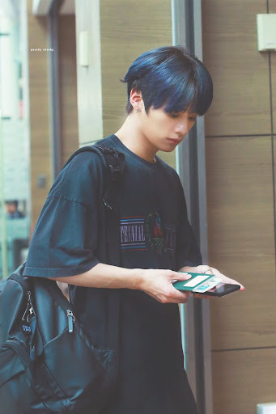
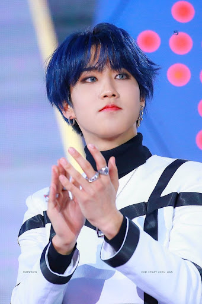

Bang Chan ou Christopher Bang é o líder da banda. Nascido em Seoul, na Coréia do Sul, em 3 de outubro de 1997, ele se mudou para Sydney, na Australia, quando ainda era jovem. Em 2010, entrou para a JYP Entertainment (responsável pela banda) após uma audição australiana.
Foram sete anos de treinamento que lhe renderam também uma amizade próxima com BamBam e Yugyeom, do GOT7
Atualmente, além de líder do Stray Kids, Bang Chang também integra o 3RACHA, um trio de hip-hop formado também por Changbin e Han. Eles são responsáveis por escrever e produzir boa parte das músicas do grupo.
Confira algumas curiosidades sobre o Bang Chan:
É fã de Dreamcatcher.
Sua estação favorita no ano é o outono.
Suas especialidades são natação e produção.
Se não estivesse na banda, Bang Chan seria ator ou atleta.
Bang Chan se vê como uma pessoa independente que faz as coisas sozinha.
Ele tem uma irmã mais nova e um irmão mais novo chamados Hannah e Lucas, respectivamente.
Quando ele tinha 8 anos, Bang Chan quebrou o recorde de natação de sua escola para um nado estilo livre de 50 minutos.
Dentro do Stray Kids, é o membro mais ocupado, de acordo com seu colega Changbin. Isso porque ele não só faz a edição da música, como a combina com a coreografia.
Channie
Lee Know
Lee Min Ho (이민호), mais conhecido como Lee Know, nasceu no dia 25 de outubro de 1998 em Gimpo, Coreia do Sul.
e um dia ele foi eliminado do realJiniretarço de 2018 com o mini-álbum “I Am Not”. Confira outras curiosidades sobre ele:
É ambidestro.
Ele não sabe nadar.
Tem medo de altura.
Sua estação favorita é o outono.
Ele gosta de falar em 3ª pessoa.
Tem o 2º cinturão em Taekwondo e Artes Marciais.
Seus hobbies são caminhar, coreografar e assistir filmes.
Se ele não estivesse em Stray Kids, ele seria um dançarino. Inclusive, foi backup dancer do BTS no BTS Not Today.
Lee Know apareceu em um documentário da National Geographic sobre Kpop quando fez o teste para Cube Ent em 2014.

Lino
ChangBin
Chang Bin (서창빈), ou apenas Changbin para os fãs, nasceu em Yongin, na Coreia do Sul, no dia 11 de agosto de 1999.
Desde os tempos de escola, ele gostava de se apresentar nos festivais, seja na dança, seja no rap. Com uma personalidade alegre, carismática e ativa, é um dos integrantes da boy band especialista em escrever.
Por isso, também participa do 3RACHA e é o principal rapper do Stray Kids. Que tal conhecê-lo melhor com algumas curiosidades? Olha só:
Ele ama coisas sombrias.
Sua comida favorita são batatas fritas.
É sempre responsável por lavar a louça.
Ele é um grande fã do ator Park Seo Joon.
Changbin participou do King of Masked Singer.
Seus hobbies são ouvir música e ir às compras.
Ele aprendeu a tocar violino quando era criança.
Possui vários apelidos, como Mogi (mosquito) e Teokjaengie (queixo).
Suas maiores inspirações são G-Dragon, do BIGBANG, sua mãe e seu pai.
Binnie Binnie
Hyunjin
O “Príncipe” Hyunjin ou Hwang Hyun Jin (황현진) nasceu em Seoul, na Coreia do Sul, em 20 de março de 2000. É um dos principais dançarinos do grupo, mas vem se destacando como rapper.
Ele é filho único.
Ele é ótimo na natação.
Hyunjin tem um cabelo preto natural.
Ele não pode comer cebolas, cenouras ou berinjelas.
O cantor adora todas as frutas, exceto caqui, e ama melancia.
Ele prefere cães a gatos (é, inclusive, alérgico a pêlo de gato).
É também conhecido como “Príncipe” por causa de sua aparência bonita, talento e carisma.
O alarme do seu celular é o mais alto e costuma ser ouvido por todos os outros que dividem o quarto com ele.
Antes de ir dormir, ele tem um ritual: ler os comentários dos fãs e verificar qual é a programação do dia seguinte.
Jinnie
Han
Ele canta quando precisa, é rapper, toca guitarra e integra o 3RACHA. Esse é Han Ji Sung (한지성), ou apenas Han, nascido em 14 de setembro de 2000 em Incheon, na Coreia do Sul.
Conheça um pouco mais sobre o Han do Stray Kids, membro queridinho por seu jeito meio “bobinho”:
Seu hobby é ler livros de mangá.
Han costumava viver e estudar na Malásia
Suas comidas favoritas são cheesecake e bolo de chocolate.
De acordo com os demais integrantes do Stray Kids, seus apelidos são Esquilo e Burro.
Han apareceu em “King of Masked Singer” como “Imgeokjjeong”, e foi eliminado na 1ª rodada.

Hannie
Félix
Lee Felix (이필 릭스), ou apenas Felix (필릭스), é um dos integrantes do Stray Kids nascido em Sydney, na Austrália. Ele veio ao mundo em 15 de setembro de 2000.
Uma de suas características marcantes é a voz grossa e rouca, além de suas sardinhas naturais. Além disso, é um dos ótimos dançarinos do grupo. Mal dá pra acreditar que ele foi eliminado durante o reality!
Ele adora doces.
Felix imita perfeitamente o som de um mosquito.
Ele fala francês e se esforça para aprender coreano.
Ele acredita que suas sardas são seu maior charme (e os fãs também acham!).
Seus hobbies são ouvir música, dançar, fazer compras (especialmente roupas), viajar e beatboxing.
Lilix
Seungmin
Pelo visto, Seoul, na Coreia do Sul, é celeiro de grandes artistas, não é mesmo? No dia 22 de setembro de 2000, nascia o virginiano Kim Seung Min (김승민)
Fissurado por higiene, trouxe algumas curiosidades sobre o cantor:
Sua estação favorita é o outono.
Ele é amigo próximo de Lee Daehwi.
Seungmin dividia um quarto com Felix e Han.
Ele queria ser um jogador de beisebol profissional.
O cantor adora comer, escrever no diário e ouvir música.
Suas inspirações são Sandeul (B1A4) e Labelmate Day6.
Seungmin apresentou o programa After School Club por algum tempo.
Em 2017, ele se inscreveu para a audição da JYP e terminou em segundo lugar.
Possui dois apelidos: caracol (dado pelos integrantes do Stray Kids) e sol (dado pelos fãs).
Ele fala inglês muito bem, embora só tenha aprendido inglês em Los Angeles por 3 meses, quando estava na 4ª série.
Minnie
I.N
Yang Jeong In (양정인) ou simplesmente I.N nasceu em 8 de fevereiro de 2001 em Busan, Coreia do Sul.
O mais novo do grupo é vocalista e toca piano, é meio desajeitado e esse é um dos motivos que o fandom ama o garoto! Mas há outros:
Ele se inspira em Bruno Mars.
Sua estação favorita é o inverno.
Sua habilidade especial é cantar Trot, um estilo tradicional coreano.
I.N. costumava ser um modelo infantil quando tinha sete anos.
Seus hobbies são ouvir ASMR e assistir Mukbang (programa de alimentação).
Junto com Hyunjin, ele fez uma participação especial no episódio 16 da 2ª Temporada de “A-Teen” (2019).
Se ele não estivesse no grupo, ele seria um cantor ou um professor de escola primária, já que ele gosta de crianças.
Tem inúmeros apelidos, como Raposa do Deserto, Nossa Maknae (“Maknae” significa “o mais novo”), Spoon Worm Yang, Fiona e Bean Wo
Innie
Skzoo
Skzoo são os bixinhos ou mascote que cada membro de kpop tem não é obrigatorio ter mascote pois cada um representa um membro alguns escolhem seu mascote por parecer
demais com um animalzinho